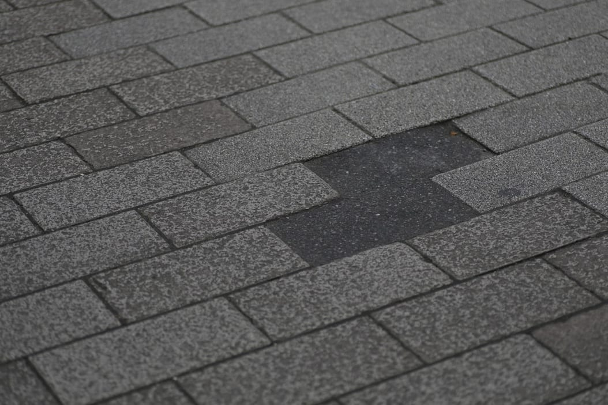
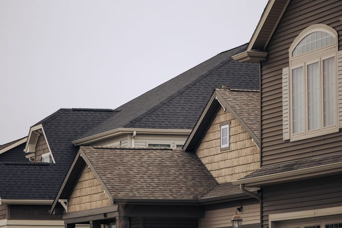

Do you actually need a new roof?
A free 45-minute inspection, photos of every problem area, and a straight answer. Even when the answer is no.
- 1,900+roofs replaced since 1996
- 4.9average across 312 Google reviews
- Licensedand insured in the State of Iowa
- Polk, Dallas, Warrencounties, plus Jasper and Madison
Every spring, the same thing happens here.
Hail comes through. Within a week, trucks with out-of-state plates are working the neighborhood. Someone walks your roof for six minutes, comes down with a number, and tells you insurance will cover it.
You have no way to check any of that. So most people do one of two things.
- They sign. Because the number sounded fine and the person seemed nice, and by October the crew has left the state.
- They wait. Another two winters go by, and then they learn what standing water does to roof decking and to the ceiling underneath it.
What you get, free
A roof inspection you can actually read.
We call it the Roof Report. It takes about 45 minutes on your roof and lands in your inbox the same day. Nothing in it is a sales page.
- Photographs of every problem area
- Shot from the roof, close enough to see the granule loss, the lifted tabs, the cracked boot around your vent stack. Not a drone flyover from 60 feet.
- How many years you have left
- A real number, with the reasoning attached: age of the shingle, condition of the flashing, how the decking felt underfoot.
- A written estimate that holds for 90 days
- Itemized down to the underlayment and the drip edge. No bundled "package" pricing, no number scribbled on the back of a card.
- A yes or no on the insurance claim
- Filing a claim that gets denied still goes on your record. We will tell you before you file whether the damage supports one.


Start to finish, this is the whole thing.
-
1
You pick a window
Text the number or fill in the form. Most weeks we are out within three business days, and we hold a few slots for active leaks.
-
2
We walk the roof
Around 45 minutes. You do not have to be home for it, though plenty of people like to be. We knock before the ladder goes up.
-
3
The report lands
Photos, findings, remaining life, and the itemized estimate, in your inbox by end of day. Printed and left in the door if you would rather have paper.
-
4
You decide, or you don't
We follow up exactly once, about a week later. If the answer is no or not yet, that is the last you hear from us.


They told me my roof had four good years left and did not try to sell me a thing. I called them back in year four.
Renee KasparBeaverdale
Two other companies gave me a number in the driveway. Tolliver gave me nineteen photographs and a line-item estimate the same night.
Tim OkoroAnkeny
Storm rolled in early and the decking was open. The crew tarped the whole thing down and stayed until it held. Nobody asked them to.
Marilyn SteenhoekWaukee

Four things we put in writing.
- We will tell you when your roof is fine. Roughly a third of the reports we write end with some version of "leave it alone and call us in a few years." That is not a lost sale to us. That is the point of the visit.
- We do not knock on doors after a storm. If a Tolliver truck is on your street, somebody on your street called us. We have never once run a canvassing crew, and we are not going to start.
- The estimate is the price. The only thing that changes it is rotted decking we could not see until the tear-off, and we photograph every sheet of it before we replace a single board.
- One follow-up, then silence. We call once, about a week after the report. If it is a no, you are off the list. No drip campaign, no seasonal postcards, no reselling your address.
Before you book
The questions we get most.
Actually free, and there is no deposit, no card, and no service fee. It costs us about an hour of a technician's day, and we are willing to spend that hour because a fair number of the people we say "not yet" to call us back when it finally is time.
Say so early and we will build the report around it. We carry financing through two lenders with terms from 24 to 120 months, and for a leak that cannot wait we can quote a targeted repair that buys you a season or two without wasting the money you spend on it.
We document it and we meet your adjuster on the roof, which is where most claims are actually won or lost. What we will not do is file on your behalf or tell you what to say, because in Iowa that crosses into public adjusting and it is not our license to hold.
A standard two-story house in the metro is one day, occasionally two if the pitch is steep or there is a second layer to strip. We do not start a tear-off we cannot dry in before dark, so if the forecast turns we will call you and move the date rather than open your house up.
Plywood goes over the beds and the AC unit, a dump trailer sits on plywood in the driveway, and the crew runs a rolling magnet across the yard and the street twice before they leave. If you find a nail afterwards, call us and somebody comes back out to sweep again.
Book the inspection. Find out where you stand.
Free, about 45 minutes, and you get the report the same day. If the honest answer is that your roof has years left in it, that is what the report will say.
Our promise The inspection is free and the report is yours to keep, whatever it says — including “your roof is fine.” No deposit, no obligation, and nobody turns up at your door afterwards.